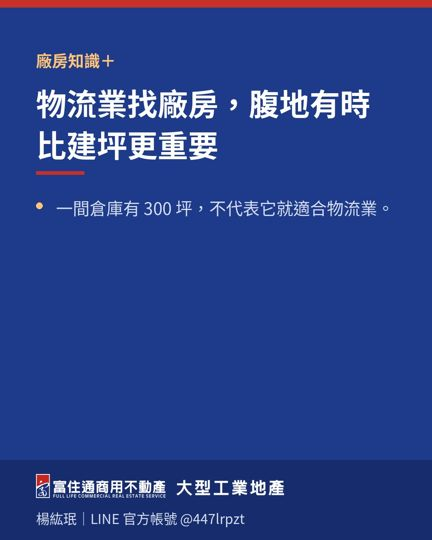

貨櫃車「看起來進得去」還不夠，完整動線才是關鍵
找物流倉庫或製造型廠房時，很多人只在門口看一眼，確認道路好像夠寬，就認為 40 呎貨櫃車可以進出。
但真正的問題不是「能不能勉強進去」，而是：
能不能安全、穩定、每天重複地完成進場、停靠、裝卸、迴轉與離場。
完整的貨櫃車動線，至少要看五個環節：
第一，聯外道路。
除了道路寬度，還要看沿線是否有臨停車輛、電線、路樹、電桿、轉彎口與尖峰交通。白天與晚上、平日與假日的狀況也可能不同。
第二，進場轉彎角度。
大門夠寬不代表轉得進去。若道路與入口角度不佳，車頭或板車可能需要多次修正，增加時間與碰撞風險。
第三，門前腹地與候車空間。
若同時有兩輛以上貨車，是否有等待位置？車輛會不會堵住道路、員工入口或鄰近出入口？這些都會影響日常營運。
第四，裝卸位置。
月台高度、遮雨、地坪承重、堆高機動線與人車分流，都要一起評估。貨櫃進得來，卻沒有適合裝卸的位置，仍然無法有效作業。
第五，迴轉與離場。
最理想的動線不是一直倒車，而是能形成順暢的進出循環。若只能長距離倒車，應實際確認安全性、所需人力與尖峰時段影響。
帶看時，建議不要只用小客車想像大車動線。
最好依企業實際使用車型、車長、進出頻率與裝卸方式，從道路口完整走一次。
物流效率不是從倉庫裡開始，而是從貨車轉進第一個路口就開始。
實際車輛通行與動線安全，仍應依現場條件、車型、駕駛操作及相關道路規定確認。

相關文章
 高雄工業區發展趨勢：企業選址正在從「找空間」走向「找效率」2026-07-30
高雄工業區發展趨勢：企業選址正在從「找空間」走向「找效率」2026-07-30
物流業找廠房，腹地有時比建坪更重要2026-07-22 企業準備擴廠，不要等空間不夠才開始找2026-08-06
企業準備擴廠，不要等空間不夠才開始找2026-08-06目前的物件
仁武區廠房｜大林鎮廠房｜岡山區廠房｜林園區廠房｜鳳山區廠房｜路竹區廠房・土地｜乙種工業區｜甲種工業區｜丁種建築用地｜大型廠房・千坪工業地｜廠房出租｜工業用地・土地